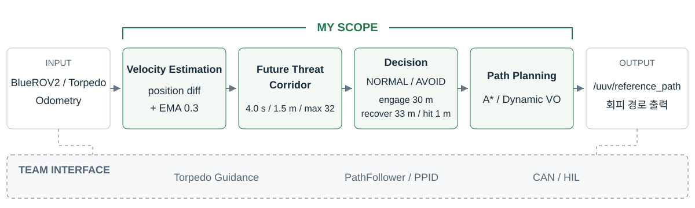
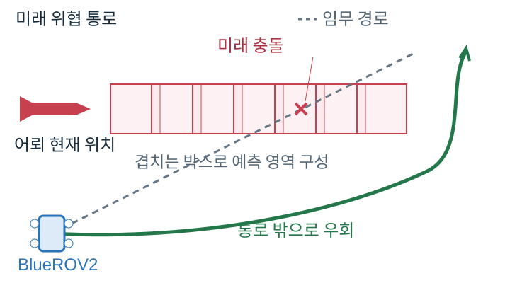

ROS 2, UNDERWATER AUTONOMOUS SYSTEM
MANTA 수중 무인체계 회피 판단 및 경로계획
BlueROV2가 임무 경로를 주행하는 동안 이동 위협의 미래 통로를 예측하고, 기존 경로와 충돌할 때 회피 모드로 전환했습니다. A*와 Dynamic VO를 같은 조건에서 비교할 수 있도록 회피 판단, 경로계획과 실험 자동화를 설계했습니다.
- 과정
- LIG D&A The SSEN 임베디드 SW 스쿨 팀 프로젝트
- 기간
- 2026.07–2026.08
- 담당
- 회피 판단, 경로계획, 실험 설계 및 자동화
- 기술
- ROS 2 Jazzy, C++17, Gazebo Harmonic, RViz, Python
01 / SCOPE
시스템에서 맡은 범위
5명이 기능별 브랜치로 병렬 개발한 수중 무인체계 시뮬레이션에서 회피 판단과 경로계획 영역을 담당했습니다. DataHub의 상태 스냅샷을 입력받아 어뢰 속도와 미래 통로를 계산하고, NORMAL/AVOID 판정과 A* 또는 Dynamic VO 계획을 수행한 뒤 /uuv/reference_path로 경로를 전달했습니다.

INPUT · BlueROV2 / Torpedo Odometry
MY SCOPE
- 속도 추정위치 차분 + EMA 0.3
- 미래 위협 통로4.0 s / 1.5 m / 최대 32개
- 회피·교전 판정NORMAL / AVOID · 진입 30 m, 복귀 33 m, 피격 1.0 m
- 경로계획A* / Dynamic VO
OUTPUT · /uuv/reference_path
TEAM INTERFACE · Torpedo Guidance / PathFollower·PPID / CAN·HIL
어뢰 유도 제어, 경로 추종 및 PPID 위치 제어, CAN/HIL 구현은 팀원 담당이며 이 페이지에서는 제 모듈과의 인터페이스만 표시합니다.
02 / THREAT MODEL
현재 위치가 아니라 미래 통로를 피한다
정적 장애물처럼 현재 어뢰 위치만 막으면 지금은 비어 있지만 몇 초 뒤 위협이 통과할 공간으로 경로를 만들 수 있습니다. 그래서 map 프레임 위치 차분으로 어뢰 속도를 추정하고, 진행 방향 앞에 겹치는 박스를 배치해 미래 통로를 만들었습니다.

어뢰 속도는 Odometry twist를 그대로 사용하지 않고 map 프레임 위치 차분에 EMA 0.3을 적용해 추정했습니다.
5 Hz 표본 사이에서 피격을 놓칠 수 있었다
5 Hz 갱신에서 접근 속도가 9.6 m/s이면 0.2초 동안 상대 거리가 약 1.9 m 좁혀집니다. 피격 판정 반경 1.0 m보다 큰 값이므로 틱의 순간 거리만 검사하면 표본 사이에서 발생한 충돌을 놓칠 수 있습니다.
t* = clamp(-dot(r0, dr) / |dr|², 0, 1)d_min = |r0 + dr · t*|r0는 직전 틱의 상대 위치, dr은 두 틱 사이 상대 위치 변화입니다. 두 틱 사이 상대운동을 직선으로 보고 구간 내 최근접 거리를 계산해 피격 여부를 판정했습니다.
03 / PLANNING
A*와 Dynamic VO는 같은 위협을 다르게 본다
예측 통로를 3D 장애물로 바꿔 전역 경로 생성
어뢰의 미래 통로를 3차원 격자 장애물로 변환하고, 현재 경로가 새 통로와 실제로 충돌할 때만 경로를 다시 계산했습니다.
상대속도를 반영해 매 틱 국소 회피
상대 위치와 상대속도를 이용해 충돌 가능한 속도 영역을 제외하고, 5 Hz마다 안전한 국소 회피 방향을 다시 계산했습니다.
경로는 매 틱 다시 만들지 않았다
주기마다 A*를 다시 실행하면 어뢰가 움직일 때마다 경로가 흔들렸습니다. 그래서 실제로 경로가 무효해질 때만 다시 계획하도록 히스테리시스를 넣었습니다.
- 현재 경로 없음 또는 목표 변경
- 기존 경로에서 1.5 m 이상 이탈
- 남은 경로가 예측 통로와 0.3 m 여유 내 충돌
- 직전 재계획 후 0.5 s 이상 경과
04 / EXPERIMENT DESIGN
비교가 성립하는 실험 조건부터 만들었다
실제 어뢰의 절대속도를 BlueROV2에 그대로 적용하면 ROV 대비 속도비가 지나치게 커져 플래너의 차이를 비교하기 전에 실험 자체가 성립하지 않습니다. 그래서 기준점 하나에서 속도, 시간과 거리 축척을 유도했습니다.
어뢰 속도 축척 검증
기준선 ±5% 이내
- 속도 축척
- 0.2916
- 시간 축척
- 0.30
- 거리 축척
- 0.0875
- 실제 대 모형
- 약 1 : 11.4
- 거리 조건
- 15% 이내
- 추력-속도 모델
- 실측 1.5% 이내
같은 조건에서 플래너만 바꿔 비교
- 접근 방향
- front / rear / side / diag
- Planner
- A* / Dynamic VO
- Guidance
- SimpleTracking / PNG
- Torpedo
- 청상어 / 백상어 / Mk48
4 × 2 × 2 × 3 = 최대 48개 조합
48개 조합을 같은 실행기로 반복할 수 있도록 자동화했습니다.
한 번 피한 것은 성공으로 보지 않았다
유도어뢰는 빗나간 뒤 다시 선회해 접근할 수 있습니다. 따라서 회피 성공을 ‘한 번 빗나가게 했는가’가 아니라 ‘어뢰 연료가 소진될 때까지 생존했는가’로 정의했습니다.
- 접근
- 회피
- 재공격
- 회피
- …
- 연료 소진 / HIT
실행 전 검증
오래된 바이너리와 목표 미전달 상태를 배치 실행 전에 검사
무효 결과 차단
계획 0회, 교전 없음과 같은 결과를 유효 성능표에서 분리
반복 실행
셋업, 발사, 로그 수집과 판정을 하나의 실행기로 관리
05 / RESULTS
측정 결과와 조건별 한계
아래는 대표 실험에서 확인한 측정값입니다.
A* · closest 0.94 m · HIT
대표 후방 추격 조건에서는 A*의 적은 재계획이 오히려 반응성 한계로 나타났습니다.
단일 대표 조건의 관측이며 A* 전체 성능의 결론은 아닙니다.
06 / LIMITS
알고리즘보다 먼저 실험의 성립 범위를 확인했다
이번 교전만 잘 피한다고 다음 교전까지 유리한 것은 아니었다
현재 판단은 각 교전에서의 회피만 최적화합니다. 회피가 끝난 뒤의 위치와 자세는 다음 재공격의 초기 조건이 되지만 현재 목적함수에는 이를 직접 반영하지 않습니다.
재공격 누적 대응은 후속 과제로 정리했습니다.
실제 절대속도를 그대로 넣으면 비교 실험이 성립하지 않는다
실제 어뢰의 공격 속도를 그대로 적용하면 BlueROV2 대비 속도비가 약 10배 이상이 됩니다. 이 조건에서는 플래너의 성능 비교보다 기동 성능 차이가 결과를 지배합니다. 그래서 절대속도가 아니라 속도비를 보존하는 축척을 사용했습니다.
실험 범위약 2–4배
실제 조건약 10–17배
실제 조건의 속도비는 비교용 제원 범위이며 이번 실험에서 실행한 조건이 아닙니다.
07 / ENGINEERING
알고리즘을 반복 검증 가능한 구조로 만들었다
코어 분리
PlanningCore ROS 의존 5 → 0판단 코어는 ROS 타입과 시계를 직접 사용하지 않고 상태와 시간을 입력으로 받도록 분리했습니다.
RViz 시각화 부하
165 msg/s → 5 msg/s예측 박스 33개를 개별 Marker가 아니라 CUBE_LIST 하나로 묶었습니다.
위협 통로 갱신
5 Hz경로가 다시 계획되지 않아도 충돌 판정과 시각화에 사용하는 위협 통로는 상태 갱신마다 최신 위치로 갱신했습니다.
실험 자동화
setup → launch → log → verdict대표 조건과 전체 배치를 동일한 절차로 반복할 수 있도록 실험 실행과 판정을 자동화했습니다.